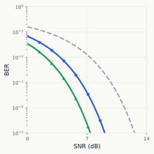

Hardware-Aware ML for PHY Synchronization
A two-stage CNN-based synchronizer combining offline-trained filters with online calibration, demonstrated on a USRP X410 software-defined radio under harsh channel conditions.
1Traditional Synchronization Challenges
Classical PHY synchronization (correlation-based frame detection, Meyr-style integer/fractional CFO estimation — the same approach used in the Real-Time FPGA OFDM PHY project) is well understood and efficient, but its performance assumptions can degrade under non-ideal, time-varying, or otherwise harsh channel conditions. This project explores whether a learned synchronizer can stay robust in exactly those conditions, and whether it can be deployed in a way that is realistic for an SDR platform rather than purely offline.
2ML-Based Approach
The synchronizer is a two-stage CNN: an offline-trained stage provides a general synchronization filter, and a second, online-training stage calibrates against the live channel conditions seen on the radio. This offline + online split is intended to combine the sample-efficiency of pretraining with the adaptability needed when channel conditions drift.
Pipeline reconstructed from the project's demo description. Internal layer architecture and parameter counts are not yet documented for this page (see Content TODO).
3Hardware Implementation Considerations
The synchronizer was demonstrated on a USRP X410 SDR platform, running as a real-time processing chain alongside live training-loss logging during calibration. The USRP X410 carries an onboard RFSoC, but the available project material documents a host-side, GNU Radio-style processing chain for this demo rather than a synthesized RTL/FPGA-fabric deployment of the network itself — so this page does not claim FPGA deployment of the inference path. Confirming whether (and how much of) the pipeline runs on the X410's FPGA fabric versus the host is tracked in the Content TODO.
4Experimental Comparison
The chart below is a real measured BER-vs-SNR result from this project's test logs, showing a synchronization performance comparison across the tested SNR range.

5Available Demonstrations
A recorded demonstration of the AI-native synchronizer running on the X410, including live training logs, is available on the demos page.